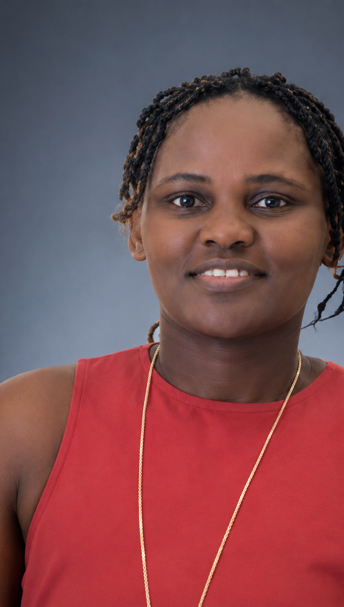

ABOUT ME
I'm Millicent.
I enjoy turning ideas into visuals — exploring illustration, 3D and information through design.

A LITTLE ABOUT ME
I like making ideas visible.
I'm interested in what happens when an idea moves from something abstract into something you can actually see.
My work gives me a chance to explore that in different ways — from drawing and illustration to building forms in 3D and finding creative ways to present information.
I'm still learning, experimenting and developing my style, which is one of the things I enjoy most about creating.
WHAT I'M EXPLORING